درس سوم: الگو و دنباله
الگو
مثال
به شکلهای زیر و تعداد چوبکبریتهای بهکاررفته در هر یک از آنها توجه کنید.
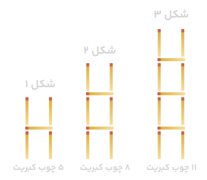
بهعنوان مثال ملاحظه میشود که، تعداد چوبکبریتهای شکل اول برابر ۵ است، که این مطلب را بهطور خلاصه بصورت $a_1 = 5$ نشان دادهایم (میخوانیم: $a$ اندیس ۱ برابر ۵). عباراتهای $a_1$, $a_2$, $a_3$ ناپدید میشوند که مقادیر آنها بهترتیب ۵، ۸ و ۱۱ است. به این اعداد جملات الگو هم گفته میشود. پس در واقع، عدد ۵ جمله اول الگوست؛ ۸ جمله دوم آن و به همین ترتیب الی آخر.
$a_1 = ۵ \qquad$
$a_2 = ۸ \qquad$
$a_3 = ۱۱ $
الف) با این نمادگذاری، $a_n$ نشاندهنده چیست و مقدار آن چقدر است؟
ب) $a_n$ به چه معناست؟
پ) آیا میتوانید حاصل $a_n$ را برحسب $n$ بدست آورید؟ برای این کار فعالیت بعد را انجام دهید.
دنیای اطراف ما سرشار از الگوهای مختلف است. بهعنوان نمونه، پیدایش شبانهروز و تغییر فصول مختلف سال جلوهای از الگوی حاکم بر طبیعت است. از سوی دیگر نظم و قانونمندیهای موجود در یک الگو به خودی خود برای ما جذاب است. چه بسا ممکن است طرحهای روی یک گل آفتابگردان، شکلهای هندسی روی یک سطح کاشیکاری شده یا مارپیچهای روی موزهٔ آتاتیس توجه شما را به خود جلب کرده باشند. بطور کلی میتوان گفت الگو یک ساختار منظم از اشکال، تصاویر، صداها، نمادها، وقایع یا اعداد است که ممکن است تکرار شوند یا رشد کنند یا ترکیبی از این دو باشند.
از طرف دیگر یکی از رسالتهای مهم ریاضیات، مدلسازی کردن پدیدههای طبیعی و پیبردن به الگوهای نهفته در آنهاست. اهمیت این موضوع بهقدری است که برخی از ریاضیدانان معتقدند که ریاضی عبارت است از علم مطالعه الگوها.
فعالیت
۱) آیدا برای بدست آوردن حاصل $a_n$ در مثال بالا، شکلهای الگو را بصورت روبرو درنظر گرفت. به کمک این روش، مقدار $a_1$, $a_2$, $a_3$ و $a_n$ را بدست آورید.
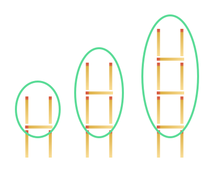
\[
\begin{align*}
&a_1 = ۱(۳) + ۲ \\
&a_2 = ۲(۳) + ۲ \\
&a_3 = ۳(۳) + ۲ \\
&a_4 = ۴(۳) + ۲ \\
&\vdots \\
& a_{10} = \\
&\vdots \\
&a_n =
\end{align*}
\]
۲) آیدا روش دیگری را بهکار برد. او تعداد چوب کبریتهای افقی و عمودی در هر شکل را بطور جداگانه مورد توجه قرار داد تا بتواند به مقدار $a_n$ دست یابد. مقدار حاصل برای $a_1$ از این روش را در جای مشخص شده بنویسید.
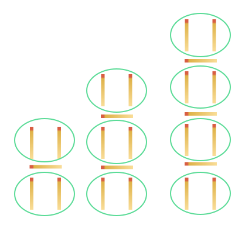
\[
\begin{align*}
&a_1 = ۱ + ۲(۲) \\
&a_2 = ۲ + ۳(۲) \\
&a_3 = ۳ + ۴(۲) \\
&a_4 = ۴ + ۵(۲) \\
&\vdots \\
&a_{10} = 10 + (10+1)(2) \\
&\vdots \\
&a_n =
\end{align*}
\]
۳) آیا شما راه دیگری را برای بدست آوردن حاصل $a_n$ میدانید؟
۴) همانطور که در قسمتهای (۱) و (۲) دیدیم، آیدا و آسا مقدار $a_n$ را بترتیب بصورتهای $a_n = ۳n + ۲$ و $a_n = n + (n+1)(۲)$ بدست آوردند. جواب آسا را ساده کنید تا به شکل جواب آیدا برسید.
۵) به کمک رابطه $a_n = ۳n + ۲$ تعداد چوب کبریتهای شکل بیستم را بیابید.
۶) با استفاده از رابطه $a_n = ۳n + ۲$ مشخص کنید که چندمین شکل در الگوی بالا دارای ۷۷ قطعه چوب کبریت است.
تذکر: در مثال بالا دیدیم که $a_n = ۳n + ۲$ را جمله عمومی الگو مینامیم؛ چرا که این رابطه در واقع ساختار جملات الگو را مشخص میکند و به کمک آن میتوان مقدار هر جمله از الگو را بدست آورد. به عبارت دیگر، در اختیار داشتن جمله عمومی یک الگو، بهمعنای آگاهی داشتن از تمام جملات آن الگوست.
الگوی خطی
در الگوی مثال قبل دیدیم که هر جمله دقیقاً ۳ واحد بیش از جمله قبل از خودش بود.
چنین الگوهایی را که در آنها اختلاف هر دو جمله متوالی عددی ثابت است، الگوهای خطی مینامیم. برای بهدلیل این نامگذاری، ستون سوم جدول مقابل را درنظر میگیریم. اگر این نقاط را در صفحه مختصات مشخص کنیم، همگی آنها روی خط $y = ۳x + ۲$ قرار میگیرند. بهعبارت دیگر مختصات تمام این نقاط در معادله خط گفته شده صدق میکند. مشاهده بین معادله خط یعنی $y = ۳x + ۲$ و جمله عمومی الگو یعنی $a_n = ۳n + ۲$ اتفاقی نیست. چرا که در واقع اختلاف بین جملات متوالی الگو بود، در معادله خط بهعنوان شیب خط ظاهر شده است که این مطلب همواره درست است.
| $(n, a_n)$ |
$a_n$ |
n |
| $(۱, ۵)$ |
۵ |
۱ |
| $(۲, ۸)$ |
۸ |
۲ |
| $(۳, ۱۱)$ |
۱۱ |
۳ |
| $(۴, ۱۴)$ |
۱۴ |
۴ |
| ... |
... |
... |
بطور کلی الگوهایی را که جمله عمومی آنها بصورت $t_n = an + b$ است، الگوهای خطی مینامیم که در آن $a$ و $b$ اعداد حقیقی دلخواه و ثابت هستند.
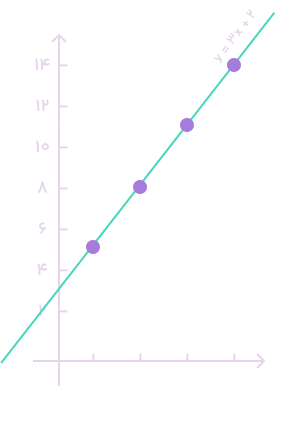
دیدیم که در یک الگوی خطی با جمله عمومی $t_n = an + b$، $t_n$ میزان تغییر جملات متوالی برابر $a$ بود. به عبارت دیگر، اختلاف هر دو جمله متوالی در این الگوی خطی برابر ضرب $n$ است. بهعنوان مثال در یک الگوی خطی با جمله عمومی $t_n = ۴n + ۱۵$، هر جمله نسبت به جمله قبل از خودش ۴ واحد کاهش مییابد.
$ ۱۱, ۷, ۳, -۱, -۵, -۹, ...$
مثال
در یک الگوی خطی، جملات چهارم و دهم بترتیب ۱۷ و ۴۱ میباشند. جمله عمومی الگو را بیابید.
حل: فرض کنیم جمله عمومی بصورت $C_n = an + b$ باشد. پس داریم:
\[
\begin{align*}
C_4 = 17 \Rightarrow & a(4) + b = 17 \\
C_{10} = 41 \Rightarrow & a(10) + b = 41 \\
&\text{_____________} \\
&6a = 24 \Rightarrow a = 4 \Rightarrow b = 1
\end{align*}
\]
پس
$
C_n = 4n + 1
$ .
الگوی جملات الگو بصورت زیر خواهند بود:
$$
5, 9, 13, \underset{C_4}{\underline{17}}, 21, 25, 29, 33, \underset{C_{10}}{\underline{41}}, 45, \ldots
$$
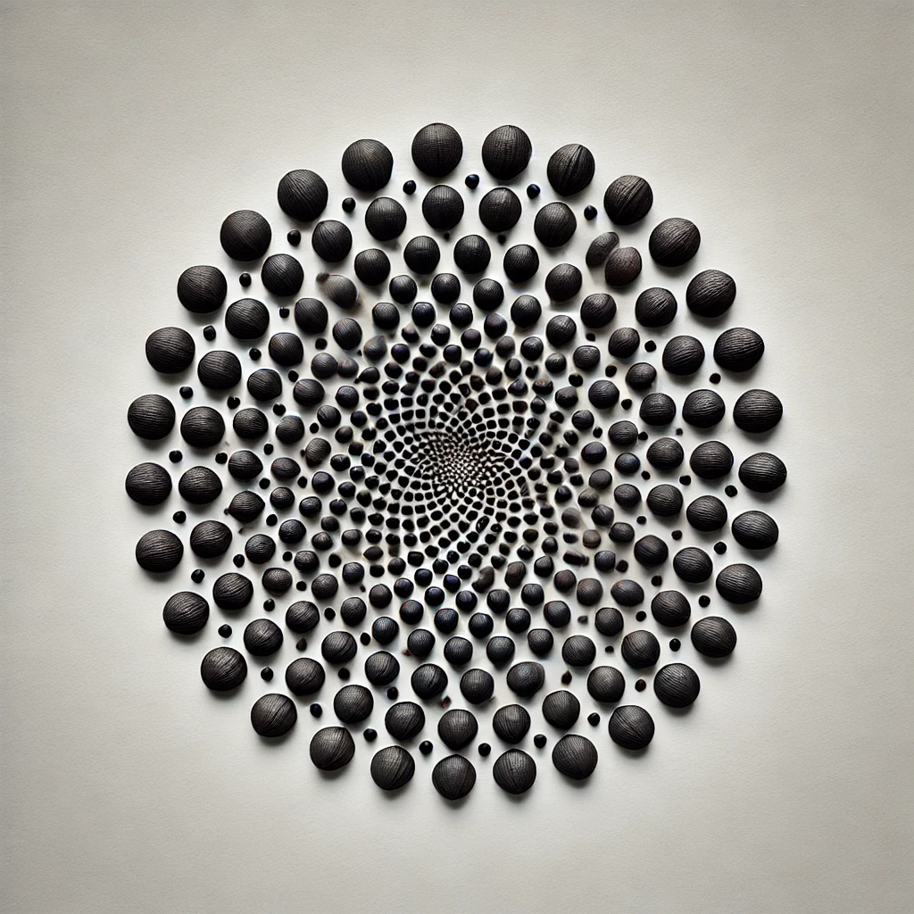
کار در کلاس
۱) شکل بعدی را در الگوی زیر رسم کنید و جدول را کامل کنید.
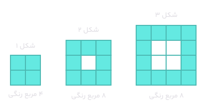
۲) توضیح دهید که چرا این الگو یک الگوی خطی محسوب میشود.
۳) با توجه به میزان افزایش جملات الگو، مقدار h در رابطه $b \ \ _n = an + h$ را بیابید و پس از حدس زدن مقدار h، حاصل $b \ \ _n$ را بدست آورید.
۴) شکل شماره ۲۵۰ دارای چند مربع رنگی است؟
۵) در چه مرحلهای از الگوی بالا، تعداد مربعهای رنگی برابر ۱۴۴ است؟
الگوهای غیرخطی
فعالیت
۱) در الگوی زیر، شکل بعدی را رسم کنید و جدول را کامل نمایید.
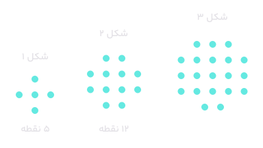
۲) آیا این الگو یک الگو خطی است؟ چرا؟
فعالیت
۳) امیررضا برای یافتن جمله عمومی این الگو، مجموعه نقاط هر شکل را به صورت زیر دستهبندی کرد. از شکلهای امیررضا کمک بگیرید و مقدار $t_n$ را بیابید.
۴) امیرمحمد نگاه دیگری به مسئله داشت. او برای هر شکل این الگو، شکل دیگری را به صورت زیر نظر کرد. با استفاده از این شکلها مقدار $t_n$ را بنویسید.
دنباله
در بخش قبل برای برخی الگوهای هندسی داده شده، یک الگوی عددی نیز معرفی شد. به عنوان نمونه در فعالیت قبل، تعداد نقاط مربوط به شکلهای متوالی الگو به صورت زیر بود:
$$۵, ۱۲, ۲۱, ۳۲, ۴۵, ...$$
این آرایش از اعداد، مثالی از یک دنباله است.
نکته
هر تعداد عدد را که پشت سر هم قرار میگیرند، یک دنباله مینامیم. این اعداد، جملات دنباله نامیده میشوند.
توجه داریم که ممکن است جملات یک دنباله فاقد الگو باشند. مشابه صفحات قبل، جملهٔ اول این دنباله را با $t_1$، جملهٔ دوم را با $t_2$ و به همین ترتیب جملهٔ nام یا جملهٔ عمومی آن را با $t_n$ نمایش میدهیم. پس:
$$ t_1=5، \ \ t_2=12، \ \ t_3=21، \ \ ...، \ \ t_n=n^2+4n$$
گفتنی است که این دنباله یک دنبالهٔ درجه 2 نامیده میشود؛ زیرا جملهٔ عمومی آن یک چند جملهای درجه دوم است.
کار در کلاس
1. دو دنباله دلخواه مثال بزنید.
2. جملهٔ عمومی چند دنباله داده شده است. در هر مورد، جاهای خالی را پر کنید.
۴. الگوی مقابل را در نظر بگیرید.
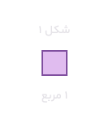
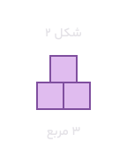
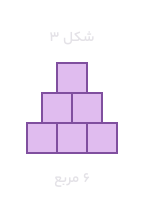
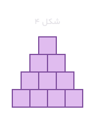
(الف) تعداد مربعها در الگو را بهصورت یک دنباله تا جملهٔ ششم آن بنویسید.
(ب) آیا دنباله حاصل یک دنبالهٔ خطی است؟ چرا؟
پ) شکلهای الگوی صفحه قبل را بهصورت زیر تبدیل میکنیم. با دقت در تصویر زیر سعی کنید حاصل $a_n$ را بر حسب $n$ بهدست آورید.
\[
\begin{align*}
2a_3 &= 3 \times (3+1) \\ \\
a_3 &= 3 \times (3+1) - 2 \\ \\
a_n &\Rightarrow \ldots
\end{align*}
\]
ت) به کمک مرحله قبل حاصل عبارت زیر را بنویسید.
\[
1 + 2 + 3 + \ldots + n = \frac{n(n+1)}{2}
\]
1. به الگوی روبرو توجه کنید.
الف) شکل بعدی را رسم کنید و تعداد کاشیهای تیره و تعداد کاشیهای سفید آن را مشخص کنید.
ب) تعداد کاشیهای تیره در هر مرحله را به صورت یک دنباله تا جمله هفتم آن بنویسید.
پ) اگر $n$ تعداد کاشیهای سفید و $t_n$ تعداد کاشیهای تیره باشد، مقدار $n$ را بر حسب $t_n$ بنویسید.
ت) برای $t_n=۱۰۰$ کاشی سفید، چند کاشی تیره لازم است؟
ث) آیا در این الگو شکلی وجود دارد که شامل ۵۰ کاشی تیره باشد؟ اگر هست، تعداد کاشیهای سفید آن چند است؟
2. الگوی زیر را درنظر بگیرید.
الف) شکل بعدی را رسم کنید، سپس تعداد نقاط هر مرحله را بصورت یک دنباله تا جمله ششم آن بنویسید.
ب) جمله عمومی الگو را بیابید.
پ) شکل دهم در این الگو چند نقطه دارد؟
1. به الگوی روبرو توجه کنید.
3. جمله عمومی چند دنباله داده شده است. در هر مورد جمله اول، چهار جمله اول دنباله را بنویسید و سپس به هر یک از الگوهای هندسی نظر کنید.
(الف) $a_n=۴n$
(ب) $b_n=۳n+۱$
(پ) $c_n=n+۲$
(ت) $d_n=n+n$
4.برای هر یک از دنبالههای درجه دو زیر جمله عمومی را بدست آورید و سپس به هر یک از الگوهای هندسی نظر کنید
الف)
$ ۵، ۸، ۱۲، ۲۰، ۲۹ ، ... $
ب)
$ ۵ ، ۱۲ ، ۲۲ ، ۳۵، ۵۱ ، ... $